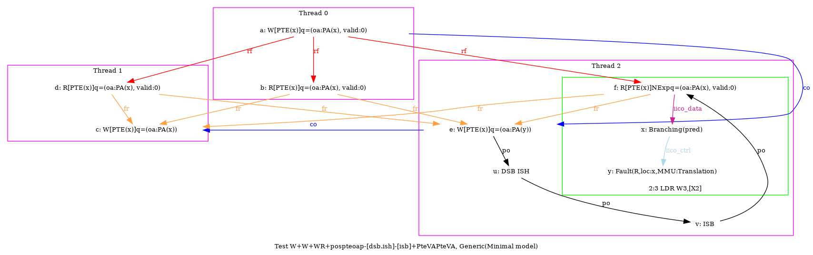

 …
AArch64 W+W+WR+pospteoap-[dsb.ish]-[isb]+PteVAPteVA
"CoePteVAPteVA CoePteVAPteOA PosWRPteOAP DSB.ISH ISB FrePPteVA"
variant=precise
Cycle=ISB FrePPteVA CoePteVAPteVA CoePteVAPteOA PosWRPteOAP DSB.ISH
Relax=PteOA PteVA
Safe=Fre Coe [PosWR,DSB.ISH,ISB]
Generator=diy7 (version 7.56+02~dev)
Com=Co Co Fr
Orig=CoePteVAPteVA CoePteVAPteOA PosWRPteOAP DSB.ISH ISB FrePPteVA
{
pteval_t 1:X2; pteval_t 0:X2;
int x=0; int y=4;
0:X0=PTE(x); 0:X1=(oa:PA(x), valid:0);
1:X0=PTE(x); 1:X1=(oa:PA(x));
2:X0=PTE(x); 2:X1=(oa:PA(y)); 2:X2=x;
}
P0 | P1 | P2 ;
STR X1,[X0] | STR X1,[X0] | STR X1,[X0] ;
LDR X2,[X0] | LDR X2,[X0] | DSB ISH ;
| | ISB ;
| | LDR W3,[X2] ;
exists (0:X2=(oa:PA(x)) /\ 1:X2=(oa:PA(x)) /\ 2:X3=4 /\ ~fault(P2,x)) \/ (0:X2=(oa:PA(x), valid:0) /\ 1:X2=(oa:PA(x), valid:0) /\ 2:X3=0 /\ fault(P2,x)) \/ (0:X2=(oa:PA(x), valid:0) /\ 1:X2=(oa:PA(x), valid:0) /\ 2:X3=4 /\ ~fault(P2,x)) \/ (0:X2=(oa:PA(x), valid:0) /\ 1:X2=(oa:PA(y)) /\ 2:X3=4 /\ ~fault(P2,x)) \/ (0:X2=(oa:PA(y)) /\ 1:X2=(oa:PA(x)) /\ 2:X3=4 /\ ~fault(P2,x))